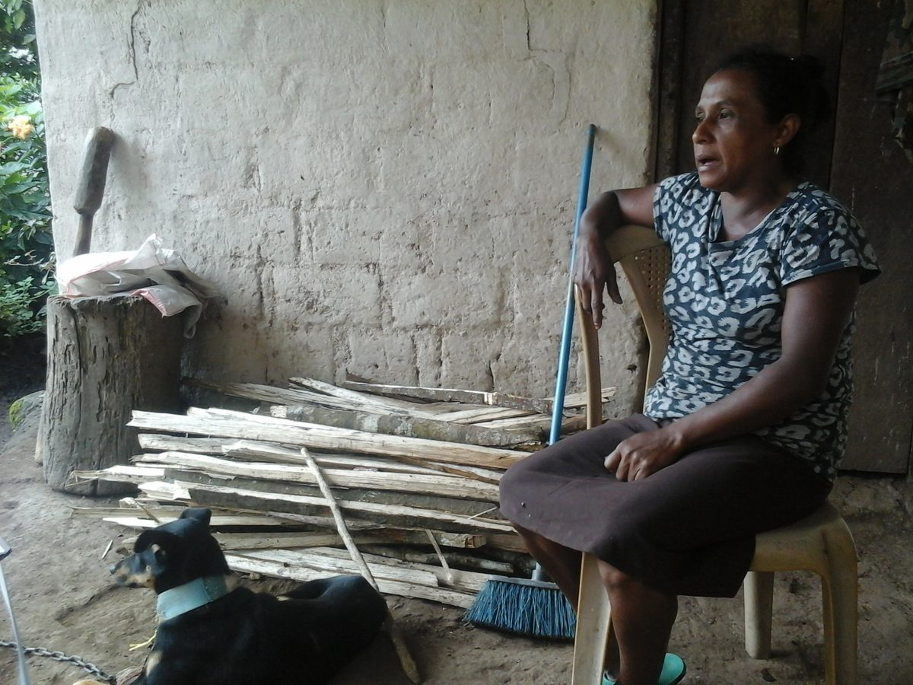
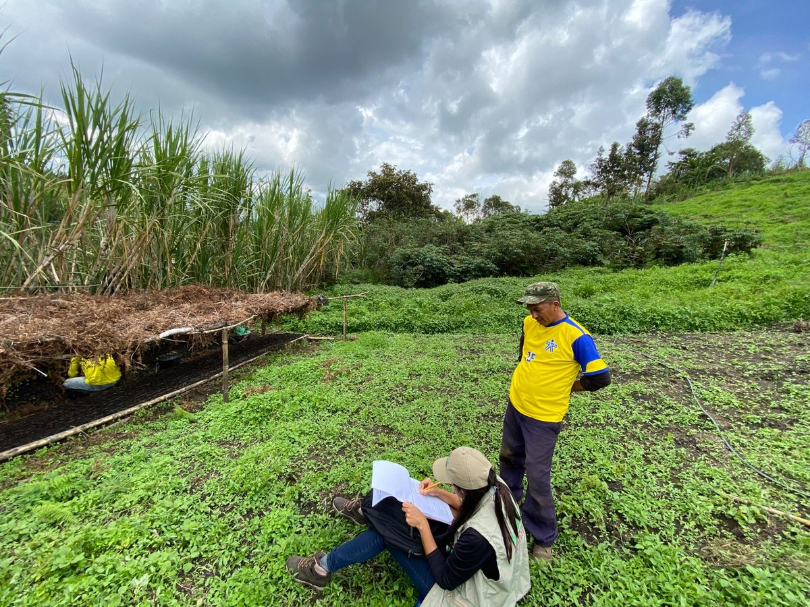
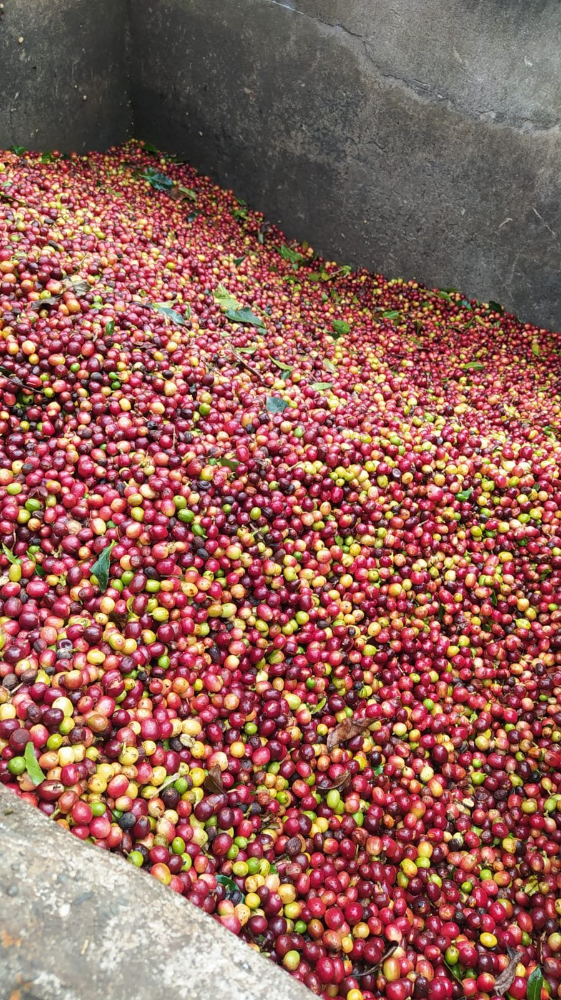
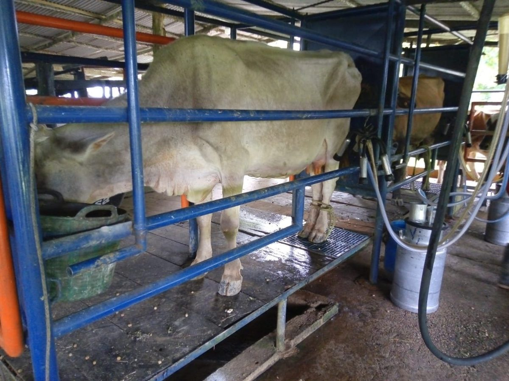

Cada bloque muestra cómo quedaría la mejora implementada, con su justificación. Basado en convenciones de sitios académicos de referencia (Michaillat, Chetty, ganadores del Best Academic Website Contest) y principios establecidos de usabilidad web.
Alex_Buritaca.JPG pesa 14.4 MB y el favicon icon.PNG pesa 1.4 MB. Un visitante con conexión promedio espera varios segundos solo para cargar el home. El estándar web es <300 KB por imagen de héroe. Esto afecta también el posicionamiento en Google (Core Web Vitals). La solución no es visual sino técnica — instrucciones al final.
Por qué: los comités de contratación y colaboradores escanean un sitio en ~10 segundos. Una franja de indicadores cuantitativos entre el hero y Education comunica productividad inmediatamente — práctica común en sitios de economistas senior. Se actualiza fácil (2 números por año).
Por qué: la numeración (01–04) crea jerarquía visual y sugiere una agenda estructurada — no una lista de temas sueltos. Reemplaza el label repetitivo "Research Area" que hoy aparece 4 veces idéntico.

Why do some farmers adopt improved technologies while others do not, and when does adoption translate into actual productivity gains? Recent work evaluates input subsidy programs, silvopastoral adoption, and improved variety diffusion in Colombia and Ecuador.

I evaluate the causal effects of agricultural and environmental programs using state-of-the-art econometric methods, with attention to whether interventions reach the most constrained populations.
Por qué: con 12+ papers y 4 working papers, la página es larga. Los filtros permiten a un visitante interesado en un tema (ej. food security) ver solo lo relevante. La barra superior resume el volumen. Cada paper lleva una etiqueta temática que refuerza la coherencia de tu agenda.


Por qué: hoy las 3 cards no señalan recencia. El badge de año en la esquina + la etiqueta dorada "NEW" en papers de los últimos 6 meses comunican que el sitio (y tu agenda) están activos. Además propongo rotar las cards a tus 3 papers más recientes de 2026.
Por qué: tu Contact actual es texto plano centrado. Una estructura de dos tarjetas (datos de contacto / temas de colaboración) con íconos hace la página escaneable y transmite apertura profesional a colaboración — el propósito real de la página.
Por qué: en un sitio académico la precisión es credibilidad. Detecté 3 inconsistencias en la versión publicada.
| Ubicación | Ahora dice | Debería decir |
|---|---|---|
| Home → Education | MSc in Economics (2016–2023) | Fechas reales del MSc (¿2016–2018?) — hoy duplica las del PhD |
| Research → "In the Field" | "...across Latin America and Sub-Saharan Africa... fieldwork in Colombia, Ecuador, and Ethiopia" | "...across Latin America... fieldwork in Colombia and Ecuador" (pediste quitar África; esta mención quedó) |
| Home → Bio | No menciona el BlueSky Grant 2026 | Añadir frase: "My research is supported by a BlueSky Grant from CGIAR's Multifunctional Landscapes Science Program (2026)." |
Por qué: Google penaliza sitios lentos en resultados de búsqueda (Core Web Vitals). Con 38 fotos de fieldwork + una foto de 14 MB, tu sitio carga mucho más lento de lo necesario.
| Archivo | Peso actual | Objetivo |
|---|---|---|
| Alex_Buritaca.JPG (foto principal) | 14.4 MB | ~250 KB (redimensionar a 600×680px, calidad 82%) |
| icon.PNG (favicon) | 1.4 MB | ~30 KB (redimensionar a 64×64px) |
| Fotos fieldwork (38 archivos) | varias >2 MB | ~200 KB c/u (máx 1200px de ancho) |
Puedo generar un script de Python (Pillow) que comprime todo automáticamente manteniendo copias de respaldo — un solo comando y listo.